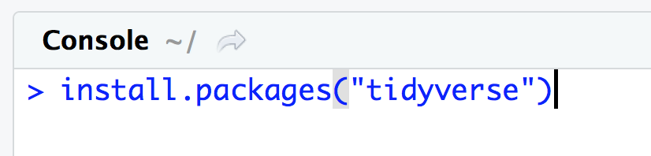
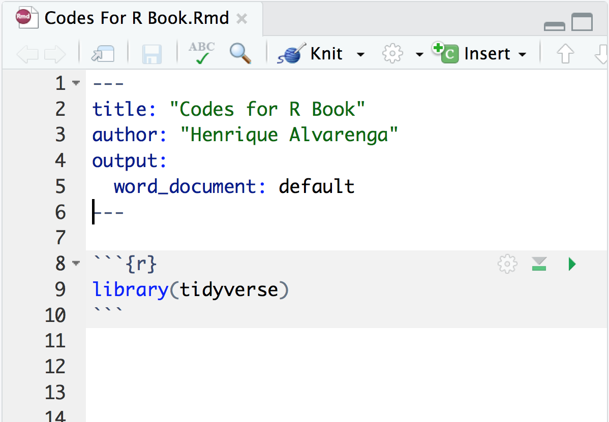
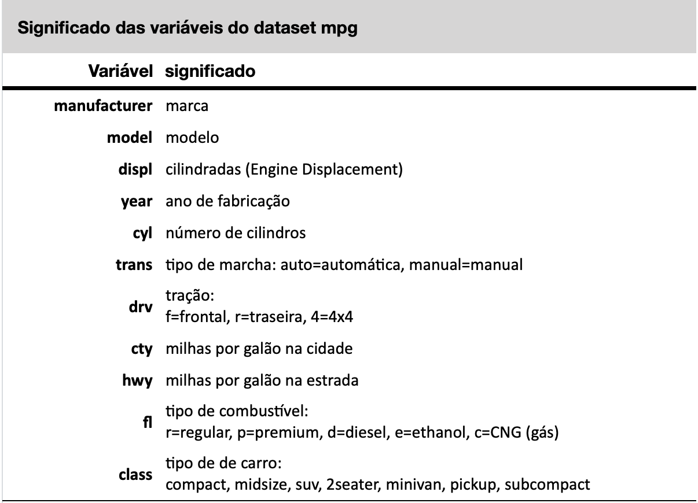

10 Pacotes do R
Uma das maiores forças da linguagem R é o seu excelente conjunto de pacotes (packages) (Hornik 2012). Pacotes são conjuntos de funções criadas por outras pessoas que contribuem para o desenvolvimento da linguagem R. Como o R é uma linguagem aberta, qualquer pessoa pode contribuir criando pacotes. Atualmente o R é um dos mais importantes repositórios de funções estatísticas, sendo muito comum que teses de mestrado na área da estatística se tornem pacotes do R.
Uma das principais razões do sucesso do R são os pacotes extremamente versáteis que a linguagem hoje dispõe. Até dezembro de 2018 o R tinha mais de 13 mil pacotes só no site do CRAN, além de milhares de outros em diferentes sites. Em maio de 2024, esse número já ultrapassava 20.000 pacotes.
Dentre esses tantos pacotes, alguns se destacam pela sua extrema versatilidade e um nome se destaca no universo da estatística: Hadley Wickham, um estatístico neozelandês, o responsável pela criação dos pacotes mais famosos do R, entre eles o ggplot2 para geração de gráficos e o dplyr para manipulação de dados. O pacote ggplot2 é o pacote gráfico mais importante do R, já tendo sido baixado mais de 10 milhões de vezes do site do CRAN. O pacote dplyr, por sua vez, já foi baixado mais de 6 milhões de vezes do site do CRAN, sendo um dos pacotes mais usados para manipulação de dados.
Esses dois pacotes e vários outros podem ser instalados mais facilmente através da instalação do pacote tidyverse. O tidyverse é uma coleção de pacotes, instalando automaticamente uma série de pacotes úteis em análises de dados, entres eles o dplyr, ggplot2 e outros, sendo o modo mais prático de instalar esses pacotes, pois com um único comando são instalados diversos pacotes. Mais informações sobre o pacote tidyverse podem ser encontradas em https://www.tidyverse.org.
10.1 Tidyverse
O tidyverse é uma coleção de pacotes R projetados para ciência de dados, para manipulação, exploração e visualização de dados, inicialmente desenvolvidos por Hadley Wickham, mas que continuam sendo expandidos por vários colaboradores.
Entre os pacotes mais importantes estão:
1.readr
O pacote readr fornece uma maneira rápida e amigável de ler dados tabulados (como .csv, .tsv e fwf). Veremos as funções read_csv() e readcsv2() para leitura de dados em formato csv.
2.tibble
o pacote tibble atualiza o objeto data frame para a tibble, uma versão mais moderna dos data frames.
3.tidyr
O pacote tidyr fornece um conjunto de funções que ajudam você a organizar os dados. Veremos como transformar data frames no formato wide em formato long e vice versa com as funções pivot_longer() e pivot_wider(); veremos como retirar observações com valores NA com a função drop_na() e como substituir observações com valores NA com a função replace_na().
4.dplyr
O pacote dplyr fornece uma gramática de manipulação de dados, fornecendo um conjunto consistente de funções que resolvem os desafios mais comuns de manipulação de dados. Veremos como extrair linhas que preencham certos critérios com a função filter(); seleciona uma ou um conjunto de colunas (variáveis) com a função select(); extrair os valores de uma coluna na forma de um vetor com a função pull(); agrupa dados segundo as categorias de uma variável categórica com a função group_by(); criar novas colunas (variáveis) a partir de outras já existentes com a função mutate() e como modifica valores de variáveis, numérica ou categóricas com a função recode().
5.forcats
O pacote forcats fornecer um conjunto de ferramentas que resolve problemas comuns com variáveis categóricas.
6.ggplot2 O pacote ggplot2 é um sistema para criação declarativa de gráficos, baseado em The Grammar of Graphics. Você fornece os dados, diz ao ggplot2 como mapear variáveis, quais tipos de gráficos usar e ele cuida dos detalhes.
O tidyverse tem diversos outros pacotes para funções mais complexas que estão fora do escopo desse livro, tais como o pacote purrr de programação funcional (FP) do R, para trabalhar com funções e vetores; o pacote pacote stringr para trabalhar com strings dentre vários outros.
10.2 Instalando o tidyverse
Para instalar um pacote, você pode usar a função install.packages() no console. É importante salientar que um pacote deve ser sempre instalado a partir do console e nunca a partir de um script ou de qualquer outro documento de texto. Além disso, vale a pena lembrar que um pacote só precisa ser instalado uma única vez.
Por outro lado, sempre que desejamos usar o pacote precisamos carregar esse pacote na memória (na sessão do R) com o comando library(). Esse carregamento do pacote na sessão deve ser feito toda vez que formos usar o pacote, de preferência no início da sessão. Em geral o comando library() deve ser um dos primeiros comandos de um script ou de um documento RNotebook ou Quarto. Frequentemente você verá que as primeiras linhas de um código contém diversos comandos library() cada um carregando um dos pacotes a serem usados naquela sessão.
Para instalar o tidyverse usamos o comando install.packages() no console, como mostrado abaixo:
> install.packages("tidyverse")
Ao executar esse comando você verá que o R instala diversos pacotes do tidyverse. Será necessária uma conexão com a internet para que esses pacotes sejam todos instalados. Dependendo da velocidade de sua conexão isso pode levar alguns minutos.
Atenção, isso só precisa ser feito uma vez!! Se você já instalou esse pacote, passe para a próxima etapa. Lembre-se, que um pacote só precisa ser instalado uma única vez.
10.3 Carrregando pacotes
A segunda etapa é carregar o pacote na sessão. Isso é feito com o comando library(). O carregamento dos pacotes necessários deve ser feito sempre no início de seu código.
Para carregar o pacote tidyverse em sua sessão R, use o comando library() no início de seu script ou de seu R Notebook ou documento Quarto, como mostrado abaixo.

Observe que no comando library() o nome do pacote não precisa ser escrito entre aspas.
10.4 Datasets do ggplot2
O pacote ggplot2 também possui vários datasets (conjuntos de dados) para facilitar o aprendizado. Podemos carregar os datasets já inclusos no ggplot2 com a função mesma função data(), bastando incluir como argumento o nome do dataset desejado, desde que que o ggplot2 ou o tidyverse já tenham sido previamente carregados.
Para acessar o dataset mpg use o código abaixo:
library(ggplot2) # necessário para acessar os datasets do ggplot2
data(mpg)Experimente usar a função str(), que mostra a estrutura dos dados de um objeto. Você verá que o dataset mpg é um data frame com 234 observações (234 linhas) e 11 variáveis, como mostrado abaixo.
str(mpg)tibble [234 × 11] (S3: tbl_df/tbl/data.frame)
$ manufacturer: chr [1:234] "audi" "audi" "audi" "audi" ...
$ model : chr [1:234] "a4" "a4" "a4" "a4" ...
$ displ : num [1:234] 1.8 1.8 2 2 2.8 2.8 3.1 1.8 1.8 2 ...
$ year : int [1:234] 1999 1999 2008 2008 1999 1999 2008 1999 1999 2008 ...
$ cyl : int [1:234] 4 4 4 4 6 6 6 4 4 4 ...
$ trans : chr [1:234] "auto(l5)" "manual(m5)" "manual(m6)" "auto(av)" ...
$ drv : chr [1:234] "f" "f" "f" "f" ...
$ cty : int [1:234] 18 21 20 21 16 18 18 18 16 20 ...
$ hwy : int [1:234] 29 29 31 30 26 26 27 26 25 28 ...
$ fl : chr [1:234] "p" "p" "p" "p" ...
$ class : chr [1:234] "compact" "compact" "compact" "compact" ...O acrônimo mpg significa Miles Per Gallon - uma medida de quantas milhas um carro pode viajar se você colocar apenas um galão de gasolina ou diesel em seu tanque (1 galão equivale a 3.79 litros e uma milha equivale a 1.6km). Esta medida padronizada serve comparar carros com base na sua eficiência. O conjunto de dados mpg que vem junto com o ggplot2 é apenas um subconjunto dos dados de economia de combustível que a EPA (Enviroment Protection Agency - USA) disponibiliza em http://fueleconomy.gov. O conjunto completo dos dados podem ser obtidos nesse site, no link seguir: http://fueleconomy.gov/feg/download.shtml.
Esse dataset possui 243 linhas (observações) com 11 variáveis. O significado de cada variável está descrito na documentação de ajuda do dataset mpg e pode ser visualizado com o comando ?mpg no console. A tabela a seguir mostra o significado de cada variável desse dataset.
